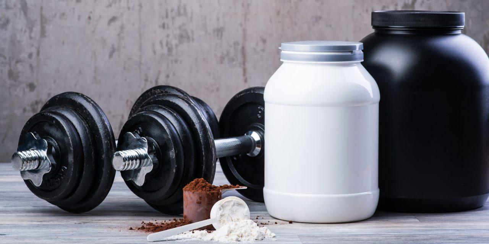
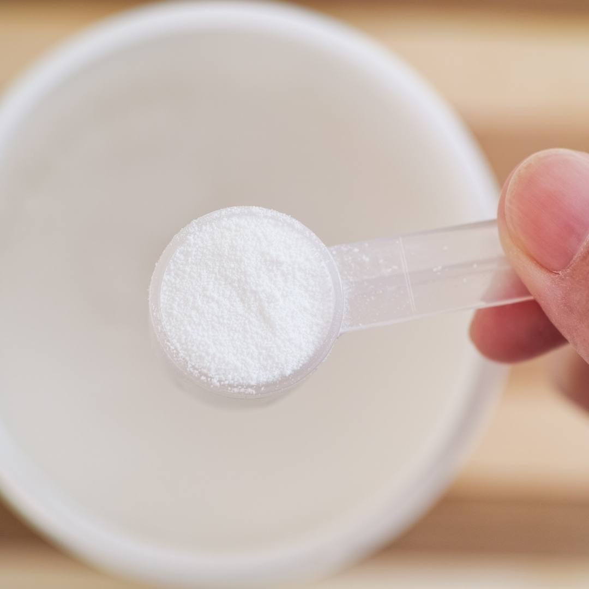

Artigos e Blog do Éverton Bottega
Assuntos sobre nutrição, exercícios, suplementação, neurociência e inteligência emocional.

A Importância de Fracionar e Equilibrar a Alimentação ao Longo do Dia
O hábito alimentar de muitas pessoas ao longo da vida, nem sempre é saudável.Muitas seguem uma rotina de alimentação ligada no piloto…
Ler artigo
A Importancia de Manter a Imunidade Alta
Sabemos que a imunidade é um fator importante para a saúde física e mental, pois estando com esta elevada, o risco de ser infectado por algum…
Ler artigo
A IMPORTANCIA DE SUPLEMENTAR COM AMINOACIDOS DE CADEIRA RAMIFICADA (BCAA’s)
A maioria dos praticantes de musculação busca melhorar sua estética e consequentemente sua saúde, assim como as pessoas que apenas praticam um…
Ler artigo
Batata Doce: Será Essa a Melhor Fonte de Carboidrato para Ajudar nos Resultados?
Já faz algum tempo que as pessoas do mundo fitness vêm utilizando a batata doce sendo um dos alimentos importantes como fontes de carboidratos.…
Ler artigo
Beta-alanina, Carnosina ou Histidina, Qual Suplementar?
Inúmeros suplementos são lançados no mercado como a “revolução nutricional esportiva” ou “mágica única e inigualável” confundindo e muitas…
Ler artigo
Intestino, Nosso Segundo Cérebro
Quando um nutricionista pergunta para o paciente, como está sua saúde intestinal, de certa forma, alguns podem achar esta pergunta um tanto quanto…
Ler artigo
Modulação Hormonal
Atualmente criou-se uma cultura ao corpo exacerbada, transformando mulheres em homens e homens em monstros. Por favor, não entendam mal essa…
Ler artigo
Nutrição e Suplementação para Saúde
A suplementação e a alimentação mantêm uma relação intrínseca e complexa que não pode ser subestimada, com a pena de comprometer a saúde do…
Ler artigo
O Potente Açúcar Conhecido Como Ribose
A ribose já vem sendo estudada a um bom tempo no meio esportivo para melhorar a síntese de ATP celular, porém ainda são poucas empresas que…
Ler artigo
O que Comer Antes e Depois do Treino de Musculação?
Muitas pessoas têm duvida do que podem ingerir antes de treinar para melhorar seus rendimentos ou o que comer para não ganhar gordura após a…
Ler artigo
Os Melhores Suplementos para Quem Pratica Musculação
Uma dúvida muito comum no mundo fitness é qual suplemento utilizar para ganhar massa muscular e/ou perder gordura corporal. A melhor resposta para…
Ler artigo
Por que Gostamos Tanto de Chocolate e Como Consumir Sem Afetar uma Dieta Equilibrada?
Sem dúvida, um dos alimentos mais requisitados, ou melhor, desejado pelas pessoas é o CHOCOLATE. O Chocolate é composto por ingredientes como…
Ler artigo
Quais São os Melhores Exercícios Físicos para Iniciar um Programa de Treino?
Muitas pessoas têm dúvidas na hora de escolher qual melhor exercício físico a ser feito, ou qual deles dariam maiores resultados esteticamente.…
Ler artigo
Qual a Principal Fonte Energética para Praticantes de Espoporte de Endurance?
Nos exercícios físicos de longa duração como: maratona, triátlon, entre outros, o corpo utiliza como fonte principal de energia as vias…
Ler artigo
Quero Emagrecer: e Agora Quem Poderá Me Ajudar?
A cada ano percebo um aumento no numero de pessoas preocupadas em emagrecer e melhorar seu físico, muitas vezes buscando maneiras extremas para…
Ler artigo
Recuperação Muscular: Como Acelerar Esse Processo?
Diversos atletas e esportistas sofrem com a demora na recuperação muscular. Muitas vezes, isso acontece devido ao excesso de treino, pouco descanso…
Ler artigo
Ubiquinona a Promisora Coenzima Q10
Vivemos em um século que a maioria das pessoas não disponibiliza tempo para cuidar de algo que deviria ser o aspecto mais importante na sua rotina,…
Ler artigo
D-Ribose
A D-Ribose é uma pentose (açúcar simples, formado por cinco ácidos de carbono) que participa de uma série de estruturas químicas do corpo, como: DNA,…
Ler artigo
Mil Abdominais para Definir a Barriga, Será Realemnte Esse o Caminho?
Conquistar o abdômen tanquinho (pouca gordura) é o sonho de praticamente todos praticantes de musculação. Com isso, alguns mitos e crenças foram…
Ler artigo
Mouse de Morango Proteico
Uma das maiores duvidas das pessoas que começar uma dieta é: O QUE COMER ANTES DE DORMIR. Essa pergunta é muito relativa, pois varia muito com…
Ler artigoBenefícios e Perigos na Prática de Exercício Físico Intenso
A prática de exercícios físicos regulares pode parecer um habito difícil de ser incorporado por muitas pessoas, fazendo com que elas nunca…
Ler artigoNenhum artigo encontrado para essa busca.
Quer ir além da leitura?
Fale com o Éverton e receba um plano sob medida para o seu objetivo.